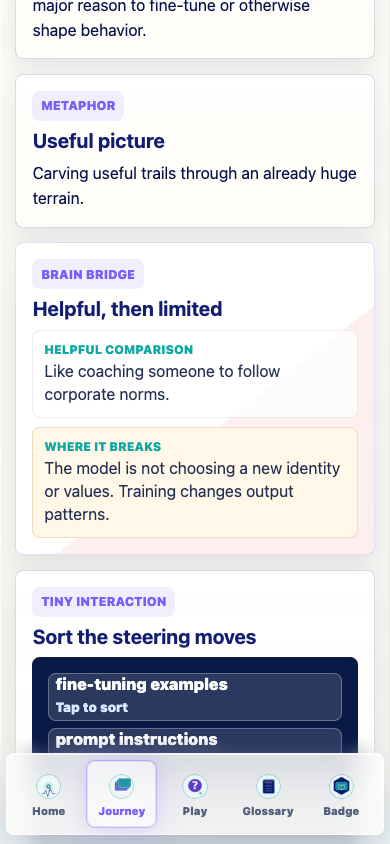

Prompt Life app copy update
Changed the Fine-Tuning Brain Bridge phrase from house style to corporate norms.
Updated the matching current Adapter glossary metaphor so current learner-facing app copy no longer uses house style.
src/data/content.tssrc/main.tsxdocs/REVIEW_NOTES.mdnpm run typecheck: passed.npm run build: passed with the existing Vite large-chunk warning.